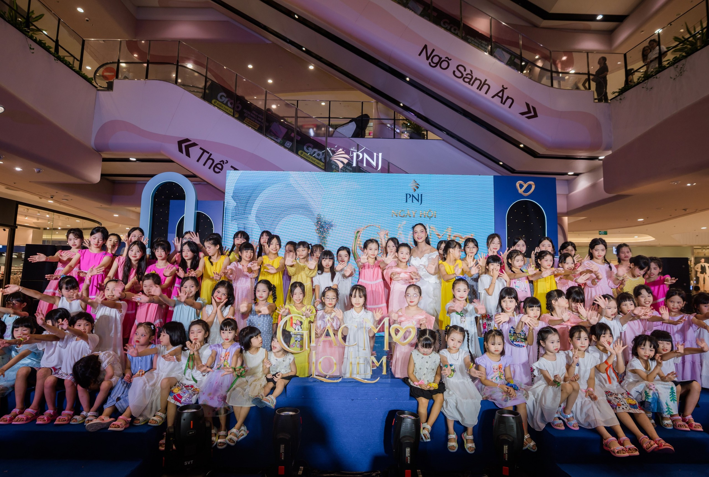

Backing progress that lasts.
We believe lasting progress begins when communities have the resources, trust and room to lead. Our proposed approach connects patient support with local knowledge.

Our proposed role
See how the foundation intends to fund, connect, and learn alongside its partners.
Learn moreStories we learn from
Field notes about people and organizations leading important work.
Read stories

About the Foundation
Opportunity should not depend on where someone is born.
We believe the people closest to a challenge should help shape the solution. Our intended role is to listen, support trusted partners, invest with patience, and share what the work teaches us.
About Us
Our Focus Areas
Where we direct our attention and resources.


Stories & Learning
Learning from the work, alongside the people doing it.

Learning
& Opportunity
Libraries for Highland Children
How a reading initiative supports learning culture in remote highland communities.
Read the case study
Climate
& Resilience
Nature Conservation & Anti-Poaching
Community-led efforts to protect wildlife and forest ecosystems.
Read the field note
Health
& Well-being
Run For Rare Kids
A community running initiative supporting families of children with rare diseases.
Read the story
Our Approach
Good intentions need a way of working.
See how listening, partnership, evidence, and long-term commitment shape the decisions we hope to make.
How We Work
Our Commitments
What responsible support asks of us.
Listen
Begin with the people closest to the challenge. Their experience shapes our understanding.
Partner
Support trusted local organizations with resources, patience, and honest collaboration.
Measure
Track what works, share what we learn, and be transparent about what we do not yet know.
Adapt
Change course when evidence asks us to. Progress is rarely linear.